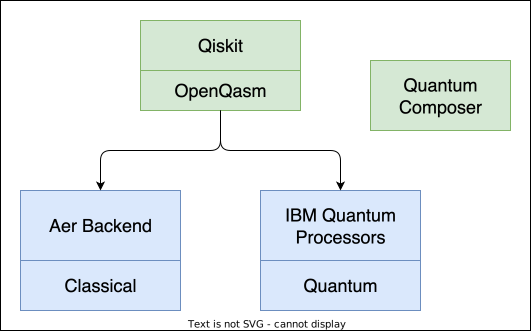
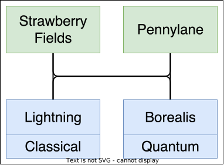
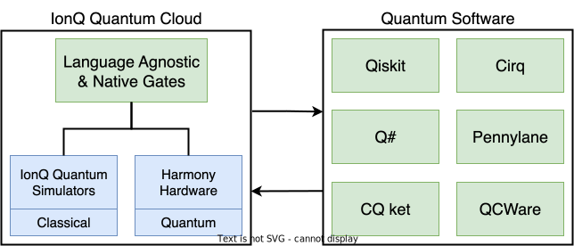

Lecture 8a: Accessing Quantum Computing Systems#
Warning
These lecture notes are a work in progress and are not a replacement for watching the lecture video, it’s intended to be a supplementary reading after watching the lecture
Introduction#
In this lecture we touch upon various ways in which you can access quantum computing systems.
Hello, and welcome to QPCC. In this module we will discuss how to access quantum computing systems. We will begin by going over the different ways in which quantum programs can be executed, namely in a remote or local environment and also on a quantum software simulator or on actual quantum hardware. This prefaces how a user might want to access a quantum system according to their circumstances. We will then discuss how to access quantum systems, in particular by looking at local systems, commercial quantum computing and publicly-funded quantum systems.
Our learning outcomes for the module are to understand the difference between quantum hardware and software simulators, the accessing of quantum computers and the current landscape of public and commercial quantum computing systems.
Executing Quantum Programs#
In lecture 3, we learnt about some building blocks of quantum operations similar to classical one, known normally as gates. We learnt the quantum versions of gates similar to classical one. One can buid a quantum program using a combination of these quantum gates. Building a useful combination that can provide solution to a given problem requires a combination of art and craft, which is essentially programming. Here in the similar spirit, we go through a discussion on classical programming, to set the stage for learning quantum programming.
What are Classical Programs#
A classical program is a set of instructions for a classical computer to execute. Classical programs are not written in a way that takes advantage of quantum hardware, but rather with classical hardware in mind.
Consider the following simple example -
import numpy as np # import numpy library
import matplotlib.pyplot as plt # import the plotting library
x = np.random.random(30000) # generate the random numbers
plt.figure(figsize=(12, 8))
plt.hist(x, bins=100) # plot the histogram
plt.xlabel("x") # set the x-label |
plt.ylabel("Histogram of x") # set the y-label | The 'plot' thickens :-)
plt.show() # display the plot |

The small piece of code above is a program written in Python programming language and uses the popular scientific library Numpy. The first line imports the module[1]/library, and the second line imports the famous plotting library matplotlib.
We then call the numpy function for 30000 samples of random numbers through x = np.random.random(30000), that are uniformly distributed. Next four lines set the instructions to plot the distribution of these numbers. And we can see the result plotted below the input code block.
Although the underlying programs in the plotting library matplotlib and the random number genenerator from numpy are far from simple, for our purpose within the above code-block, they serve a simple purpose, of writing a two step process -
Generate a set of random numbers, and
Plot their distribution.
The two libraries that we used, contain the heavy load of complex algorithms to do a high-level task. Both of these libraries are written for our usual classical computer, and execute classical algorithm on a classical computer.
What are Quantum Programs#
So what is a quantum program? Typically, a quantum program -
is a set of instructions for a quantum computer to execute, and
generally takes advantage of one or more of the following:
quantum mechanical concepts
quantum gates
quantum simulation/dynamics
Here we see a similar random number generator to the previous classical version, however there are some differences. Although we attain essentially the same result, a set of random numbers between zero and sixteen, the programs are executed in a different manner and use different techniques to achieve this result.
The quantum program uses the quantum mechanical properties of superposition and measurement to attain random numbers so long as it is executed on quantum hardware, while the classical one uses pseudo-random methods of number generation algorithms. The quantum program can also be executed on a classical software simulator and this case would inherit the pseudo-random nature of the classical machine.
Below we show how a quantum program can be represented by a quantum circuit. It is written in python and uses the popular Qiskit library.
import qiskit # import qiskit library
import matplotlib.pyplot as plt # plotting library
size = 4 # number of qubits to use
qc = qiskit.QuantumCircuit(size, size) # Build the quantum circuit
for i in range(size): # Loop for adding Hadamard gate
qc.h(i)
for i in range(size): # Loop for adding measurement
qc.measure(i, i)
qc.draw(output='mpl', scale=1.8) # Marmalade is served :-)

In the above code, we import the qiskit library along with matplotlib, and construct a quantum circuit with 4 qubits and 4 classical bits, through qc = qiskit.QuantumCircuit(size, size) . Next we add Hadamard gates at each qubits through a for loop.
Next we add measurement instruction for each qubit \(i\) and to store the output in corresponding \(i\)th classical bit. The last line draws the circuit.
Now this build circuit can be executed on a quantum device, or a classical backend simulator, which pretends to be a quantum device. We run it through following -
from qiskit_aer import Aer # import the Aer simulation backend
from qiskit.visualization import plot_histogram # import plotting function
sim = Aer.get_backend('aer_simulator') # define a simulator object from Aer
job = sim.run(qc, shots=10000) # run circuit via simulated experiment
result = job.result() # extract result from job
counts = result.get_counts() # get the measured values on state
plot_histogram(counts, figsize=(12,8)) # dinner is ready :-)

The Aer module is part of qiskit software ecosystem, and provides us with a few backend software simulators for quantum computing. The line sim = Aer.get_backend('aer_simulator') defines a simulator object based on Aer’s ‘aer_simulator backend’.
This object can now run a job of executing a quantum program. It’s done via job = sim.run(qc, shots=10000) where sim.run is the function that runs the circuit qc with 10000 ‘shots’. The result and the execution details are saved in job variable.
Next we extract the results through job.result() function, and subsequently get the measuring counts, which we plot.
Note
The counts are essentially random, and because of the structure of the circuit, they are supposed to by uniformly random.
Any idea why they are supposed to be uniformly random?
Executing quantum programs on quantum hardware#
Below are some comparative comments on the pros and cons of real quantum hardware.
mindmap
root(Quantum programming)
Advantages
Access the full potential of QC
Superposition
Entanglement
Disadvantages
Current Hardware constraints
Noise
Low number of Qubits
Low circuit depths
Remote access only
Availability
The previous slide begs the question, if we can simulate quantum programs on classical machine then what is the point in using quantum hardware. Lets take a look at some advantages and disadvantages of using quantum hardware.
Noise
Physical qubits experience noise and decoherence, resulting in computational errors. This problem also amplifies as we attempt to use more qubits and so this limits the number of qubits you can use, and the circuit depth of the program you are implementing.
QC hardware vs software simulators#
Let us now compare the two methods of executing a quantum program., namely executing on quantum hardware as previously discussed and executing on a quantum computing software simulator. We have highlighted here some advantages and disadvantages of using either computational scheme, in the context of five key areas; Comparison to reality, noise, cost, access and control, and scalability.
Jumping into the first area, we discussed before that quantum computing hardware manipulates actual qubits and this adheres to us the computational benefits of quantum entanglement and superposition. In contrast, the software simulators consist of software objects that mimic qubits, and this is resource expensive and ultimately can only be scaled to simulating approximately fifty qubits with the most powerful of computers.
When it comes to noise, quantum hardware is at a disadvantage as qubits are inherently noisy. However, with a software simulator we can have zero noise, we can also introduce a noise model to better simulate how actual quantum hardware would perform in a certain task. This is highly controllable and helps to better understand and improve actual quantum hardware.
Unfortunately, quantum hardware, being in it’s infancy, is quite expensive and also it requires significant maintenance. In contrast, software simulators are largely free and open source and can be easily set up on a desired computer or platform.
Quantum computers are also limited in access, often times a vendors most advanced technology is not accessible at all and they only provide scaled down quantum computers with small numbers of qubits to the public. Controlling quantum hardware is also difficult, you generally have to send your program to the vendor for execution and they control the runtime. Again, software simulators are advantageous here as they are easily accessible and you are free to control your own workflow.
When it comes to scalability, quantum hardware is limited by the current state of the hardware with expectations for significant upscaling in the future. Thus, quantum computers could eventually significantly out perform software simulators, which are limited to around fifty qubits, in this regard.
Quantum Computing Hardware |
Quantum Computing Software Simulators |
|
|---|---|---|
Comparison to Reality |
||
Noise |
||
Cost |
||
Access and Control |
||
Scalability |
||
Executing quantum program on QCSS#
You can install quantum computing simulation software (QCSS) locally on your laptop/desktop or workstation. Remote QCSS is installed on larger scale HPC facilities. Most of these machines running the backend simulations are required to have insanely large RAM, and obviously with larger compute power, usually through GPU accelerators, since with increasing number of qubit \(N\), the Hilbert space needed to simulate the backend grows as \(2^N\).
Note
Another way of seeing the increase is that adding each qubit to the problem size doubles the memory requirement.
This poses a fundamental limitation of classical methods due to exponentially increasing resource requirements such as memory, storage and CPU time in many algorithms.
But it’s that this limitation, even though quite severe, makes the QCSS completely useless. There is plenty we can do and learn through it. See a comparative chart below
%%{ init: { 'flowchart': { 'curve': 'stepAfter' } } }%%
flowchart TD
subgraph Local["`**Local**`"]
direction LR
l1["Complete user control"]
l2["No waiting in queue"]
l3["Limited circuit depth"]
l4["Low qubit count (~25)"]
end
subgraph Remote["`**Remote**`"]
direction LR
r1["Many users in queue"]
r2["Waiting time can be large"]
r3["Bigger circuit depth"]
r4["Larger qubit count (~50)"]
end
a["`Quantum computing
software simulators`"]--->Local & Remote
There are several aspects of learning QC on QCSS. QCSS are essentially just a software layer on top of a powerful machine, and so they are a lot easier to procure and maintain compared to an actual quantum device, which requires complex experimental setup and careful monitoring/maintenance.
On the other hand, for learning the QC, and testing feasibility of a quantum algorithm one does not necessarily need large qubit size. In fact most concepts for learning purpose can be illustrated with 4-6 qubits at most, where one can deploy a QCSS on machines ranging from laptops to HPC machines.
The QCSS, can be used either on your local machine or on a remote computer. The advantages of using them locally are that you have complete control over the execution and there in no need to wait in any queues to execute your program. We are subject to some disadvantages when running your programs locally, we care limited to a small number of qubits, around 25, and also we must use low circuit depths as the alternative is too computationally expensive. This results in high compute and memory requirements.
Similarly there are advantages and disadvantages to using a remote computer for the simulation of quantum programs. The main advantage is larger circuit depths and qubit counts relative to a local execution, while the disadvantages are the availability of the computer, waiting times can be significant and disruptive. Keep in mind that remote executions are still limited in scalability, with fifty qubits being an approximate limit.
Depending on your goals you might want to use actual quantum hardware or a quantum software simulator in a local or remote level. For example, quantum software simulators provide a testbed for your quantum programs and are generally a suitable arena in which to run your quantum programs albeit with limited scale. Ultimately the usefulness of quantum computing will only be attained by using actual quantum hardware as this uses real quantum properties rather than classical simulations of those properties, but this is again limited by the current state of quantum hardware which has problems scaling up the number of qubits and also with noise. It will likely take years to see the real power of a quantum computer come to fruition. You can however test your programs on real quantum hardware today, again this has a limited scale to a few hundred qubits.
Executing quantum programs locally#
As discussed before, we can’t use quantum hardware at the local level, we must access it remotely. This is due to constraints of the current state of quantum hardware (See image on right). We can however, use a quantum software simulator at a local level, and this is what we will discuss in this section, where we will investigate the different types of quantum software simulators and their capabilities as well as which quantum software simulators are currently available for use. We must keep in mind that quantum software simulators are limited in scale at a local level, and slightly less so on a remote level. This is due to the compute and memory requirements needed for an ever growing number of qubits and depth of circuit used in quantum algorithms.
For example, observe the following graph, as the number of qubits in our quantum system grows, the number of classical bits required to represent and simulate these qubits grows exponentially and this is the fundamental reason why quantum simulation is difficult especially when we acknowledge that most useful quantum algorithms require qubit numbers that far exceed any amount that a classical computer could simulate in a reasonable time.

We are very limited by the number of qubits we can simulate as well as the depth of the circuit. A classical computer with a clock speed of 3Ghz would require 35 hours to perform one operation on 53 qubits.
Your laptop, for example, could simulate around 25 qubits, in a reasonable time, at a push.
There are a variety of quantum computing software simulators available to us, including state vector, and tensor network simulators.
Types of QC software simulators#
Lets now discuss some different types of quantum software simulators. They can differ in terms of both their front-end and backend. However, the differentiation in the front end is more within the classical programming era, as it refers to elements such as UI, and the underlying language. The more interesting aspect is at the backend, which usually is the mathematical machinery that actually simulates the quantum system representing the circuit/system.There are many, but here we will discuss two in in particular.
These are state-vector simulators and tensor network simulators[2]. The state-vector simulator performs the quantum computation in question exactly as it is while the tensor network simulator simplifies the calculation at the cost of accuracy. This creates some relative advantages and disadvantages between these two types of simulators. The state-vector simulator holds memory of each possible qubit state, and updates them all at each time step in the computation. It has problems with memory capacity and compute time growing exponentially with the number of qubits. It can also model both ideal and noisy qubits. The tensor network simulator simulates only states you predictably need by using tensor network contractions, this reduces memory and compute requirements allowing the simulation of 100s or 1000s of qubits.
The following table of comparison summarises the two -
Statevector simulatores

Maintains full \(2^n\) qubit vector state in memory.
Updates all states at every timestep, probability sample \(n\) of the states for measurement Memory Capacity and time grow exponentially with the number of qubits, so
Limited to approximately 50 qubits on a supercomputer
Can model both ideal and noisy qubits.
Tensor Network Simulators

It only simulates the states you need.
It Uses tensor network contractions to dramatically reduce the memory for simulating circuits.
It Can simulate 100s or 1000s of qubits for many pactical quantum circuits.
It Can model both ideal and nosiy qubits.
It only offers advantage in weakly entangled systems.
Taking another look at the differences between these simulators, through the figure below. The tensor network simulator can simulate many qubits but at a relatively low circuit-depth, while the state-vector simulator can simulate a relatively low number of qubits at a higher circuit depth. Depending on the algorithm you wish to execute, you can vary which simulator type you use to best solve the problem.

Accessing QCSS#
Lets now take a look at the various simulators available. We can roughly split these into two-categories. Those which are used as part of a broader software stack such as Qiskit’s aer backend and standalone simulators such as the Intel Quantum Simulator. We will see these appear later when investigating how to access different quantum systems.
Stack Specific
Qiskit: Aer Backend
Pennylane: Lightning
D-wave Ocean Simulators
Standalone
Tightly-Integrated quantum systems#
Tightly integrated quantum systems are stacks in which the software layer and the quantum computing layer (including QSS and QH) are developed by the same provider. Examples include -
IBM* (small systems only, more qubits need partnership)
D-Wave
Xanadu
These providers create both the hardware and software layer while also providing environments in which quantum algorithms can be used to create applications. If you wish to access these systems, you need only visit each providers website, create your own personal account and download any relevant material or use their respective cloud services. Generally you can also install and use their software packages and use your personal computer to simulate quantum hardware.
IBM Quantum#
IBM Quantum is one the popular emerging provider for software and hardware stacks for quantum computing. Lets take a closer look at IBM Quantum and what they offer.
Firstly, we have Qiskit, the quantum computing software library which serves as a complete quantum computing software library. Using Qiskit, one can develop quantum circuit based algorithms an applications, simulate these programs on Qiskits Aer backend simulator or run the program on IBMs quantum hardware. The maximum qubit IBM had reached till last year was 433, Osprey quantum processor. OpenQASM serves as Qiskit’s Quantum Assembly language, which is an intermediate between the qiskit and the classical or quantum hardware. Secondly, IBM also offer a quantum computing cloud environment called IBM quantum lab, in which you can develop and run qiskit based programs on simulators or quantum hardware.
IBM also offer a unique Quantum Composer tool, which allows you to build quantum algorithms using a quantum circuit interface interface. You can easily install qiskit and run simulations on your local machine. Or you can sign up for free for an IBM quantum account and gain access to quantum hardware, the quantum lab and the quantum composer.
mindmap
Current capabilities
Software Stack:
Qiskit
Qiskit runtime
Qiskit serverless
OpenQASM
IBM Quantum Lab
IBM Quantum Composer
Hardware Stack: Superconducting Qubits
Number of Qubits: 433
Quantum simulators – up to XXX qubits
IBM Quantum Eagle
Here we see a preview of the (Initially called IBM Quantum Lab, and renamed, restructured into) IBM Quantum Platform is IBM’s cloud computing service. Earlier, they provided jupyter notebook running facility through the browser, but that service has been discontinued.
Here is the screenshot of the IBM quantum composer. You can see in the centre the quantum circuit builder, where you can place qubits and gates to your liking and then perform measurements on the circuit. The results are diagrammatically shown in the bottom left aswell as on the Q-sphere on the bottom right. Qiskit code that represents the circuit is generated in the right panel.
Xanadu#
Lets now move on to Xanadu. Xanadu provides photonics based quantum computing hardware, and has pretty impressive and actively maintained software stack. Pennylane is Xanadu’s programming platform, and software library. Using Pennylane we can develop circuit based algorithms and applications and run these programs on the lightning simulator or Xanadu’s quantum photonics hardware like borealis. Xanadu also offers a cloud computing service in which we can similarly develop and run quantum programs.
mindmap
Current capabilities
Software Stack:
Strawberry Fields: Photonic Circuit Programming
Pennylane: QML Programming
The Walrus
Hafnians
Hermite polynomials, and
Gaussian boson sampling
Hardware Stack: Photonic Qubits
Number of Qubits: 216
Xanadu
Pennylane
Strawberry Fields
The Walrus
Here is the link to Xanadu codebook. Please also checkout the tutorial page for pennylane, whose screenshot is shown below -
D-Wave Leap IDE#
We see a similar structure to IBM and Xanadu with D-Wave with some differences. Most notably that D-Wave uses quantum annealing based programming, with Ocean, and quantum annealing hardware. Ocean is D-wave’s software suit. D-Wave also offers unique hybrid Classical-Quantum Solvers. Classical simulation can also be performed on D-Waves so-called classical solvers. D-Wave also offers an online cloud-computing service akin to IBM and Xanadu called the Leap IDE.

To checkout the D-wave’s cloud setup, click this link, and to signup for the cloud services, check link. Following video gives an intro to D-wave’s quantum computing setup.
D-Wave maintains the lead in the industry for their use of quantum annealing hardware[3].
Heterogenous Quantum Systems#
Heterogenous cloud quantum systems#
We will now move on to Heterogenous Cloud Quantum Systems and these are quantum programming online environments in which the elements of the quantum stack are developed by multiple different providers. For example, in this diagram the applications are sourced from provider A, the algorithms from C and the harwdware and software from provider B. The stack is then implemented in a cloud system usually provided by another party.
The notable providers for heterogenous systems are following -
Amazon Braket
Microsoft Azure Quantum
Google Quantum Computing Service
QCWare Forge - https://forge.qcware.com/
IonQ
Amazon Braket#
One example of a heterogenous quantum cloud system is Amazon’s Braket. Amazon Braket offers the use of it’s own quantum computing langauge and simulators which are confusingly also called Braket, and it also offers hardware access to many different systems including Rigetti, IonQ, D-Wave, Xanadu, and Oxford Quantum Circuits.
Other languages
Horizontal flow
Remote access to quantum hardware
Amazon high perf simulators
QCWare Forge#
QCWare Forge is next on the list of Heterogenous providers, and they offer the use of their own QCWare language and simulators. They also offer classical and quantum hardware access to the providers listed in the figure below.
More details on their qcware software can be found here. This library can be installed via pip install qcware, however you need to register with the vendor to get the API_KEY to be able to use the library.
Current Capabilities
Software Stack: qcware
Hardware Stack:
IonQ
IBM
Riggetti
D-Wave
Simulators: qcware
Microsoft Azure Quantum#
Microsoft also offers a heterogenous cloud system in which you can use their Q# language and simulators. THey also offer access to Toshiba’s GPUs for classical simulation. The quantum hardware access includes Quantinuum, Pasqal, Quantum Circuit Inc, IonQ and Rigetti.
Current capabilities
Software Stack: Azure QDK
Q#
Hardware Stack:
Topological Qubit QC in development
Third-Party Providers
IONQ: Ion Trap 11 Fully-Connected Qubits
Quantinuum: Ion Trap with ? qubits
Number of Qubits: 11
Simulators: …
Future Roadmap: Old Article
Google Quantum Computing Service#
Google similarly offers a heterogenous cloud quantum system called Google Quantum AI. Google’s Cirq quantum programming language can be used as well as their simulators and quantum hardware, the most powerful being Sycamore. While Google is relatively more self contained then the other hetorogenous cloud providers, they also offer Quantum HArdware Access to AQT, IonQ, Microsoft Azure Quantum, Pasqal, and Rigetti.
Current capabilities
Software Stack:
Programming Framework: Cirq
Quantum Computing Service allows access to NISQ devices
Libraries & Extensions:
Open Fermion: Electronic Structure Package
Qism: Simulators for Quantum Circuits
Tensorflow Quantum: Library for Hybrid Quantum-Classical Machine Learning
Hardware Stack: Sycamore Superconducting Qubit Processor
Number of Qubits: Sycamore 54 Qubits
Future Roadmap:
IonQ#
IonQ offers a heterogenous cloud quantum system named IonQ Quantum Cloud. IonQ offers a unique language agnostic serviice, which can manipulate their Quantum Simulators and hardware. They alos provide use of various quantum software listed on the right.
Publicly Funded Quantum Systems#
National Quantum Computing Systems#
The last section we will cover is Publicly-Funded quantum systems. Firstly lets take a look at Irish National systems, most notably provided by the Irish Centre for High-End Computing which offers various bespoke quantum systems including Atos QLM, Intel Quantum Simualtors, Qulacs, Pennylane, Qiskit, and Tket.
The Quantum computing in Ireland initiative was also recently launched.
€11M QColr project launches Ireland into the forefront of quantum computing research
European HPC Quantum Systems#
Several European HPC centres have quantum initiatives, with rather diverse activities. Most of them provide access to high performance quantum simulators or emulators. Atos QLM seems to be a popular choice.
mindmap
root("European HPC Quantum Systems")
nl["The Netherlands"]
("Quantum Inspire")
("Atos QLM")
ne["Nordic and Estonia"]
("Nordiquest")
("LUMI Supercomputer")
("Helmi Quantum Computer")
de["Germany"]
("Fraunhofer SCAI")
("IBM Hardware")
("Julich")
("JUNIQ project")
("Software Emulators")
("D-Wave")
("OpenSuperQ")
("LRZ")
("Quantum Integration Center")
("Atos QLM")
("IQM")
it["Italy"]
("CINECA")
("Quantum Computing Lab")
fr["France"]
CEA
Atos QLM
Quantum Simulators on HPC
A small number have real quantum hardware or a in the process of procuring or internally developing one. Many also offer various education programs.